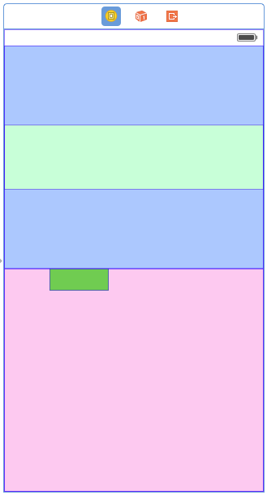

I want to use AutoLayout to size and layout a view in a manner that is
reminiscent of UIImageView's aspect-fit content mode.
I have a subview inside a container view in Interface Builder. The subview has
some inherent aspect ratio which I wish to respect. The container view's size
is unknown until runtime.
If the container view's aspect ratio is wider than the subview, then I want
the subview's height to equal the parent view's height.
If the container view's aspect ratio is taller than the subview, then I want
the subview's width to equal the parent view's width.
In either case I wish the subview to be centered horizontally and vertically
within the container view.
Is there a way to achieve this using AutoLayout constraints in Xcode 6 or in
previous version? Ideally using Interface Builder, but if not perhaps it is
possible to define such constraints programmatically.
Answer
You're not describing scale-to-fit; you're describing aspect-fit. (I have
edited your question in this regard.) The subview becomes as large as possible
while maintaining its aspect ratio and fitting entirely inside its parent.
Anyway, you can do this with auto layout. You can do it entirely in IB as of
Xcode 5.1. Let's start with some views:
The light green view has an aspect ratio of 4:1. The dark green view has an
aspect ratio of 1:4. I'm going to set up constraints so that the blue view
fills the top half of the screen, the pink view fills the bottom half of the
screen, and each green view expands as much as possible while maintaining its
aspect ratio and fitting in its container.
First, I'll create constraints on all four sides of the blue view. I'll pin it
to its nearest neighbor on each edge, with a distance of 0. I make sure to
turn off margins:

Note that I don't update the frame yet. I find it easier to leave room
between the views when setting up constraints, and just set the constants to 0
(or whatever) by hand.
Next, I pin the left, bottom, and right edges of the pink view to its nearest
neighbor. I don't need to set up a top edge constraint because its top edge is
already constrained to the bottom edge of the blue view.

I also need an equal-heights constraint between the pink and blue views. This
will make them each fill half the screen:

If I tell Xcode to update all the frames now, I get this:
So the constraints I've set up so far are correct. I undo that and start work
on the light green view.
Aspect-fitting the light green view requires five constraints:
- A required-priority aspect ratio constraint on the light green view. You can create this constraint in a xib or storyboard with Xcode 5.1 or later.
- A required-priority constraint limiting the width of the light green view to be less than or equal to the width of its container.
- A high-priority constraint setting the width of the light green view to be equal to the width of its container.
- A required-priority constraint limiting the height of the light green view to be less than or equal to the height of its container.
- A high-priority constraint setting the height of the light green view to be equal to the height of its container.
Let's consider the two width constraints. The less-than-or-equal constraint,
by itself, is not sufficient to determine the width of the light green view;
many widths will fit the constraint. Since there's ambiguity, autolayout will
try to choose a solution that minimizes the error in the other (high-priority
but not required) constraint. Minimizing the error means making the width as
close as possible to the container's width, while not violating the required
less-than-or-equal constraint.
The same thing happens with the height constraint. And since the aspect-ratio
constraint is also required, it can only maximize the size of the subview
along one axis (unless the container happens to have the same aspect ratio as
the subview).
So first I create the aspect ratio constraint:

Then I create equal width and height constraints with the container:
I need to edit these constraints to be less-than-or-equal constraints:
Next I need to create another set of equal width and height constraints with
the container:
And I need to make these new constraints less than required priority:

Finally, you asked for the subview to be centered in its container, so I'll
set up those constraints:
Now, to test, I'll select the view controller and ask Xcode to update all the
frames. This is what I get:
Oops! The subview has expanded to completely fill its container. If I select
it, I can see that in fact it's maintained its aspect ratio, but it's doing an
aspect- fill instead of an aspect- fit.
The problem is that on a less-than-or-equal constraint, it matters which view
is at each end of the constraint, and Xcode has set up the constraint opposite
from my expectation. I could select each of the two constraints and reverse
its first and second items. Instead, I'll just select the subview and change
the constraints to be greater-than-or-equal:
Xcode updates the layout:

Now I do all the same things to the dark green view on the bottom. I need to
make sure its aspect ratio is 1:4 (Xcode resized it in a weird way since it
didn't have constraints). I won't show the steps again since they're the same.
Here's the result:
Now I can run it in the iPhone 4S simulator, which has a different screen size
than IB used, and test rotation:
And I can test in in the iPhone 6 simulator:
I've uploaded my final storyboard to this gist for your convenience.
Suggest
Rob, your answer is awesome! I also know that this question is specifically
about achieving this by using auto-layout. However, just as a reference, I'd
like to show how this can be done in code. You set up the top and bottom views
(blue and pink) just like Rob showed. Then you create a custom
AspectFitView:
AspectFitView.h :
#import <UIKit/UIKit.h>
@interface AspectFitView : UIView
@property (nonatomic, strong) UIView *childView;
@end
AspectFitView.m :
#import "AspectFitView.h"
@implementation AspectFitView
- (void)setChildView:(UIView *)childView
{
if (_childView) {
[_childView removeFromSuperview];
}
_childView = childView;
[self addSubview:childView];
[self setNeedsLayout];
}
- (void)layoutSubviews
{
[super layoutSubviews];
if (_childView) {
CGSize childSize = _childView.frame.size;
CGSize parentSize = self.frame.size;
CGFloat aspectRatioForHeight = childSize.width / childSize.height;
CGFloat aspectRatioForWidth = childSize.height / childSize.width;
if ((parentSize.height * aspectRatioForHeight) > parentSize.height) {
// whole height, adjust width
CGFloat width = parentSize.width * aspectRatioForWidth;
_childView.frame = CGRectMake((parentSize.width - width) / 2.0, 0, width, parentSize.height);
} else {
// whole width, adjust height
CGFloat height = parentSize.height * aspectRatioForHeight;
_childView.frame = CGRectMake(0, (parentSize.height - height) / 2.0, parentSize.width, height);
}
}
}
@end
Next, you change the class of the blue and pink views in the storyboard to be
AspectFitViews. Finally you set two outlets to your viewcontroller
topAspectFitView and bottomAspectFitView and set their childViews in
viewDidLoad:
- (void)viewDidLoad {
[super viewDidLoad];
UIView *top = [[UIView alloc] initWithFrame:CGRectMake(0, 0, 500, 100)];
top.backgroundColor = [UIColor lightGrayColor];
UIView *bottom = [[UIView alloc] initWithFrame:CGRectMake(0, 0, 100, 500)];
bottom.backgroundColor = [UIColor greenColor];
_topAspectFitView.childView = top;
_bottomAspectFitView.childView = bottom;
}
So it's not hard to do this in code and it is still very adaptable and works
with variably-sized views and different aspect ratios.
Update July 2015 : Find a demo app here:
https://github.com/jfahrenkrug/SPWKAspectFitView